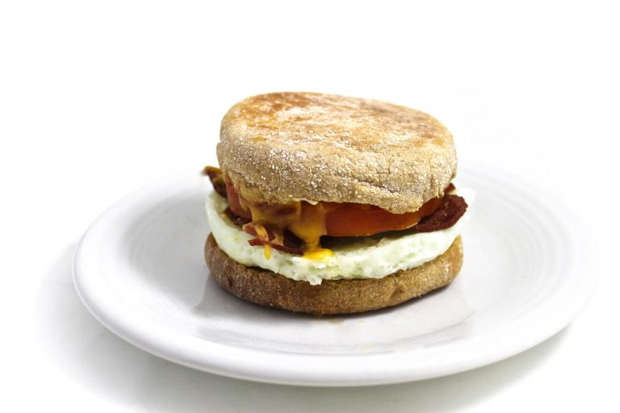

Rex's Brekkie

Inspired by the Starbucks Bacon-style Turkey, White Cheddar, and Egg White Sandwich, The Rex's Brekkie is a breakfast I have been making for the past year. It is a healthy breakfast sandwich that always fills me up in the morning. I recommend this recipe to anyone who is picky and does not like the fat thats on regular bacon or the yolk in an egg (I personally like the yolk if it is done right but prefer not to have it).
Ingredients
- 2 tbsp Egg whites
- 2 strips of Turkey bacon
- 1 English muffin
- White cheddar
- Butter
Instructions
- Heat up pan on medium
- Spray Cooking oil and put a little butter onto pan.
- Add 2 tbsp of egg white to one side of the pan until cooked to your liking (frequently flip to keep both sides even).
- Put two strips of turkey bacon on the other side until cooked to your liking (frequently flip to keep both sides even).
- Add cheese on top of your egg for about a 1½ minutes and then remove your items off of the pan onto a plate.
- Place your items into a cut english muffin.